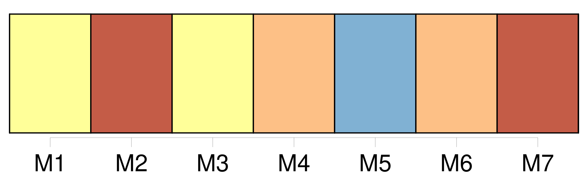
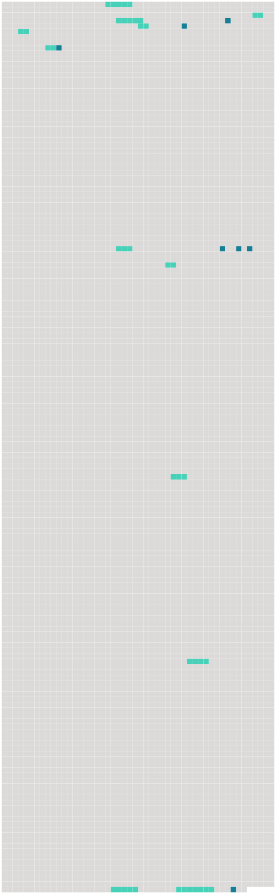

Longueur nb maillons : 19 mentions |
  |
J'étais sûre que c'étaient mon père et ma mère qui s'en allaient ainsi, et malgré [la douleur de ma hanche] , je voulus me dresser pour les appeler, mais le médecin appuya des deux mains sur ma poitrine, en disant : [5 phrases]
Et tandis que le médecin continuait à s'informer de [ma souffrance] , des larmes se pressèrent en foule sous mes paupières, et malgré moi, jaillirent avec force. Les jours suivants, [la douleur de mon corps] devint si vive que je n'apportai d'attention à rien d'autre qu'à [elle] [2 phrases] Je souffrais atrocement et sans répit, et mon immobilité parfaite n'avait pas un seul instant raison de [cette souffrance] Pendant la nuit, je [la] sentais à travers une somnolence insupportable, et dont j'essayais de sortir par des soubresauts violents qui augmentaient [mon mal] [6 phrases] [Mon mal] [qui] continuait à veiller pendant la nuit s'endormait parfois durant le jour. [92 phrases]
[Un chien hargneux] s'était caché dans ma hanche, et au plus petit mouvement de ma part, [il] mordait et [déchirait] et [sa] colère était lente à s'apaiser. [4 phrases]
Ainsi en a décidé le médecin de l'hôpital après un dernier examen de [mon mal] [76 phrases]
Je le regrette vite, car dans ma hanche, [le chien hargneux] [69 phrases] Un désir violent, lancinant même, de revoir les miens m'est devenu un mal plus sensible que [celui de ma hanche] [89 phrases] L'hiver passa emportant chaque jour avec lui [un peu de mon mal] Et quand le printemps revint, [le mauvais chien caché dans ma hanche] avait enfin usé [ses] crocs. |
 |
La ressource peut être téléchargée sur la page Ortolang
Si vous avez des questions ou vous voyez des erreurs, merci d'envoyer un mail à silvia.federzoni89@gmail.com
Site développé par S. Federzoni (contact)